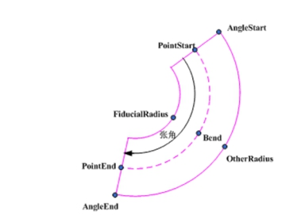
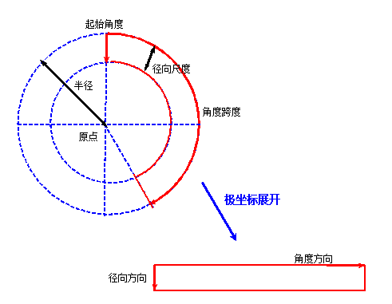
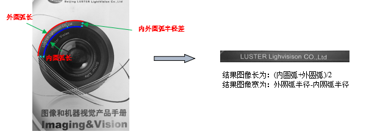
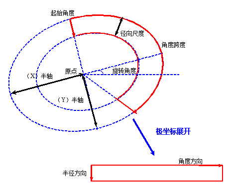
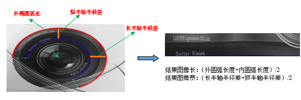

极坐标展开工具主要将圆环区域或椭圆环区域图像展开为矩形区域图像，以对图像进行处理、分析和识别。下图为极坐标展开工具应用示例，其将圆环字符区域展开为矩形区域，以利于对字符进行识别。
| 分类 | 参数名称 | 参数描述 |
|---|---|---|
| 属性窗口 | 圆环段 | 描述了需要进行极坐标展开的区域。见图二。 |
| 圆心（X/Y） | 圆环段的圆心，圆心的横纵坐标。 | |
| 圆半径 | 圆环段的最大半径。 | |
| 起始角度 | 圆环段的起始角度，按照顺时针方向。 | |
| 张角角度 | 圆环段起始角度到终点角度之间的角度。 | |
| 径向缩放比例 | 圆弧段的径向缩放比例。 | |
| 是否设置采样长宽 | 是否设置极坐标展开工具的采样的长宽，就是对展开后的图像进行长宽设置。 | |
| 采样长 | 设置展开后显示的长度。 | |
| 采样宽 | 设置展开后显示的宽度。 | |
| 图像窗口 | 输入图像 | 需要进行极坐标展开的图像。 |
| 圆弧段GUI | 需要进行极坐标展开的图像的区域。 | |
| 数据链 | 输入图像 | 需要进行极坐标展开的图像。 |
| 二维线性变换 | 需要进行极坐标展开的图像的区域的缩放平移旋转操作，默认不做操作，可以不进行设置。 | |
| 高级界面 | 无 | 无。 |
| 分类 | 参数名称 | 参数描述（参数的含义） |
|---|---|---|
| 监视窗口 | 输入图像 | 需要进行极坐标展开的图像。 |
| 输出图像 | 极坐标展开后的目标图像。 | |
| 执行结果 | 工具执行结果。 | |
| 执行时间 | 工具执行时间。 | |
| 图像窗口 | 输出图像 | 进行极坐标展开的结果图像。 |
| 执行结果 | 显示工具执行结果，执行成功显示“OK”，执行失败显示“NG”，同监视窗口的执行结果参数。 | |
| 数据链 | 输出图像 | 极坐标展开后的目标图像。 |
圆环段各个参数的定义，见图2。

圆环区域可通过以下参数进行描述：原点、半径、径向尺度、起始角度、角度跨度。其中角度以顺时针为正。输出矩形图像规定水平方向为角度方向，垂直方向为径向方向，如图3所示：

输出矩形缺省尺寸计算示意图如图4所示，即角度方向采样点数为外圆弧长和内圆弧长的平均值；径向方向采样点数为外圆半径和内圆半径之差。

椭圆环区域可通过以下参数进行描述：原点、X方向半径、Y方向半径、径向尺度、起始角度、角度跨度、旋转角度。其中角度以顺时针为正。如图5所示。径向尺度和角度跨度的含义及方向性和圆环区域相同。

输出矩形缺省尺寸计算示意图如图6所示，即角度方向采样点数为外椭圆弧长和内椭圆弧长的平均值；径向方向采样点数为短轴外内半径之差和长轴外内半径之差的平均值。

无
参见“\Samples\极坐标展开工具.gvp”。